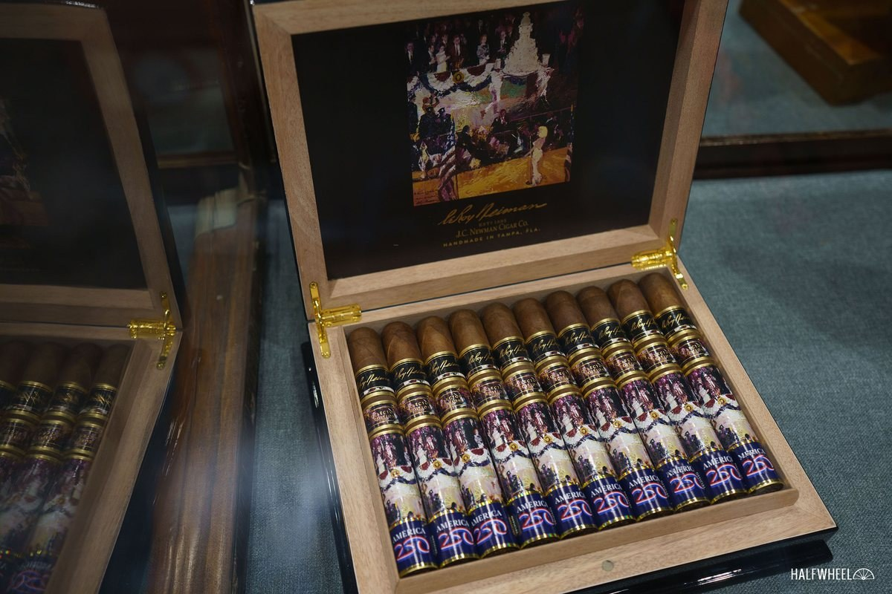

J.C.ニューマン『ルロイ・ニーマン2026』出荷、収益はタンパの芸術教育へ
J.C.ニューマンの画家コラボ第4弾が出荷開始。絵画はモンローがケネディ大統領に歌う「ザ・プレジデンツ・バースデー」で、750箱限定、収益は全額寄付されます。
記事全文を読む ›WORLD CIGAR NEWS & INTELLIGENCE
BEYOND HAVANA. BEYOND BORDERS.世界の葉巻を、もっと広く、もっと深く。

J.C.ニューマンの画家コラボ第4弾が出荷開始。絵画はモンローがケネディ大統領に歌う「ザ・プレジデンツ・バースデー」で、750箱限定、収益は全額寄付されます。
記事全文を読む ›
プレミアム・シガー協会の年次見本市PCA26がニューオーリンズで開催されました。出展262社、小売約2,540人、総来場5,945人超を記録しました。
記事全文を読む ›
米連邦地裁が2020年以来の「プレミアムシガー」8要件定義を維持する判断を示しました。手巻きシガーの規制除外は続き、フレーバー付きと機械巻きはFDA規制の対象のままです。
記事全文を読む ›
米最高裁がIEEPA関税を違法と判断したことを受け、通商法122条の暫定関税が10%で発効しました。ドミニカ共和国産・ホンジュラス産は10%維持、ニカラグア産は18%から10%へ下がります。
記事全文を読む ›
STGは米国の2販売部門間で5ブランドを移管する再編を発表した。2026年2月2日発効で、両部門の規模を均等化する新戦略「Focus2030」の一環となる。
記事全文を読む ›
5ブランドの葉巻をアルミチューブに1本ずつ収めた5本セット。バンデローロとネルソンの新サイズが入り、164ドル（約26,000円）。11月中旬から出荷開始予定。
記事全文を読む ›
J.C.ニューマンのTAA（全米葉巻商協会）会員店限定品。5年間熟成させた葉を使う全ニカラグア産ブレンド（6 1/4×54）で、1本12ドル（約1,900円）、8,000本限定。
記事全文を読む ›
スカンジナビアン・タバコ・グループ（STG）が小売店向けに新しい価格表を送付しました。例年なら値上げの合図ですが、今回は数セントの微調整にとどまる一方、ジェネラル・シガー社の価格表から11品目が削除されました。
記事全文を読む ›
アタベイやバイロンで知られる Selected Tobacco が、スペイン・マドリードに5階建ての新拠点を開設し、10月10〜11日の週末にグランドオープンを祝いました。
記事全文を読む ›
ジョシュア＆ケイトリン・スティーブンス夫妻が立ち上げたテキサス発の新興ブランド、Brolo Cigar Co.（ブローロ）が、3つのレギュラーブレンドでデビューします。
記事全文を読む ›
Cigar Aficionado 主催の「Big Smoke ラスベガス」が今年で30周年を迎え、11月6日（金）・7日（土）の2日間、ラスベガスのホースシュー・ラスベガスで開かれています。本日7日はセミナー当日。セミナーはすでに満席で、約600人が参加します。
記事全文を読む ›
米国のプレミアム葉巻（手巻き）の輸入量は、2026年1〜8月で2億8,220万本となり、前年同期比で0.6%増とほぼ横ばいでした。産地別では、最大のニカラグアが1億6,870万本（全体の約6割）で横ばい、第2位のドミニカ共和国は5,730万本で6.3%減。
記事全文を読む ›
葉巻専門誌「シガー・アフィショナード」の創刊者で編集・発行人を務めたマービン・R・シャンケン氏が83歳で亡くなりました。1990年代の葉巻ブームを牽引し、葉巻を世界のラグジュアリー文化に押し上げた立役者として、業界に大きな足跡を残しました。
記事全文を読む ›